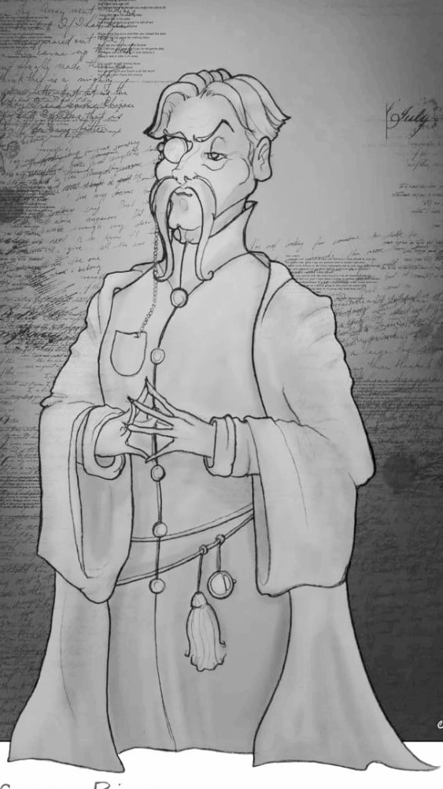

Больше практики и реальных навыков
В течении всего первого месяца в учебном году Министерство Магии проводило глобальное исследование в стенах Хогвартся. Особый акцент делался на учебной программе, квалификации преподавателей, общих условиях обучения. Результаты были настолько плачебными, что теперь Школу Чародейства и Волшебства ждёт масштабная "реконструкция".
Главным было решение о назначении на должность директора нового кандидата, так как Дамблдор уже не мог держать весь Хогвартс под контролем. Им стал профессор зельеварения Северус Тобиас Снейп. Должность декана Слизерина временно займет Гораций Слизнорт. На год или два, максимум. Он тоже слизеринец, к тому же ранее занимал эту должность до того, как уступил её Снейпу.
Сам новый директор будет вести Защиту от Тёмных Искусств, а Энтони Эйвери – станет его ассистентом. Он будет преподавать Защиту у всех младших курсов, вплоть до пятого. Двумя старшими займётся Северус. Также за ним будет дуэльный клуб, который заново будет возрождён, чтобы студенты могли опробовать боевую магию под надзором старших. Скорее всего Энтони станет замещать директора, если тот будет занят. Если у него всё будет получаться, то он же станет и деканом, когда Гораций окончательно устанет от этой хлопотной обязанности.
Появится в штате еще один слизеринец. Его зовут Агильберт Мальсибер. Он займёт должность школьного смотрителя, вместо Аргуса Филча которого было решено отправить на заслуженный отдых. Так как пенсия у старика маленькая, то попечительский совет, так сказать, учитывая заслуги и долгую работу в школе, выделит средства для пожизненной аренды небольшого домика в Хогсмите, где этот заслуженный пенсионер и будет жить вместе со своей кошкой. Сам Агильберт полон идей, как реорганизовать школьное хозяйство. Он планирует детально изучить систему магии, благодаря которой функционирует школьный замок. Возможно, многое требует обновления или улучшения. Кроме того, он собирается вести для учеников факультатив по бытовой магии. Также наказания теперь будет иметь более практичный характер в рамках данного факультатива.
Профессора Граббли-Плэнк, которая раньше вела занятия, уговорили ещё пару лет поработать в Хогвартсе вместе с Хагридом. Полностью брать нагрузку преподавателя она не желает, поэтому договорились, что они станут работать в следующем режиме. Одно занятие у курса ведет мадам с упором на теорию, на следующий раз те же ученики встречаются с Хагридом, и он им демонстрирует то волшебное животное, о котором им говорила Граббли-Плэнк.
Через несколько лет на смену им придёт юный Рольф Скамандер – внук легендарного Ньюта, книжки которого все наверняка читали. Из него выйдет хороший преподаватель, который сможет вызвать интерес к своему предмету. Рольфу было обещано, что для финансирования его экспедиций попечительский совет будет собирать средства при помощи благотворительных акций. Сами исследования дикой природы будут проходить исключительно во время каникул. Так что, как только диплом будет у него в кармане, молодой человек станет преподавателем Колдозоологии, а такой школьный предмет, как Уход за магическими животными уйдет в прошлое. Хагрид же с этого момента вновь вернется к своей первоначальной должности лесника.
Также стоит упомянуть, что будет решена проблема преподавания истории магии в школе. Во-первых, новый директор уже связался со специалистом, который пообещал помочь остановить профессора Катберта Бинса. Строго говоря, призрак может оставаться в школьном замке. Как говорится, одним больше, одним меньше… Но Бинс должен прекратить читать свои нудные лекции, занимая большую лекционную аудиторию. Во-вторых, уже получено согласие от видного специалиста по истории волшебного мира Европы Эдварда Кэмпбелла занять кафедру, как только она опустеет. В крайнем случае, с помощи магии школьного замка создадут еще одну большую аудиторию для занятий, а призрак пусть читает свои в старой... Кэмпбелл уже весь горит от нетерпения и даже начал набрасывать план лекций. По его задумке первокурсники за один год в сжатом виде получат представление обо всем ходе волшебной истории. Это особенно важно для новичков, рожденных среди маглов. Все последующие курсы они будут изучать в хронологическом порядке как историю непосредственно волшебников-людей, так и историю других волшебных рас, обитающих в своем особом континууме. Это должны быть две почти независимые линии истории.
Факультатив по Теории магии Альбус Дамблдор ещё несколько лет продолжит читать самостоятельно.
МакГонагалл, Спраут и Флитвик согласились с тем, что им нужны ассистенты, чтобы хоть немного разгрузить их. Они самостоятельно ищут себе помощников и – одновременно – тех, кто со временем их сможет заменить на посту. Ассистент мадам Спраут кроме прочего должен будет взять на себя теоретическую составляющую занятий. Одно занятие Гербологией будет посвящено информации, на следующем школьники рвут листочки и выдавливают гной. Так сказать, сочетание теории с практикой. Кажется, кандидаты на должность у всех троих уже имеются.
Таким образом, образование в Хогвартсе в ближайшем будущем должно существенно возрости.